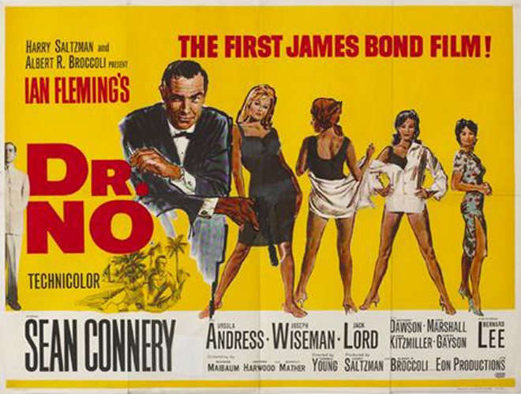
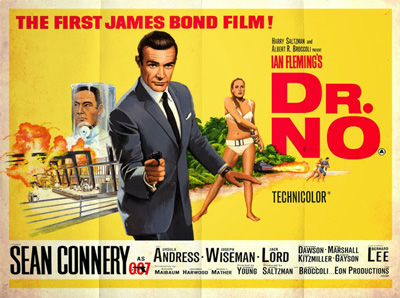
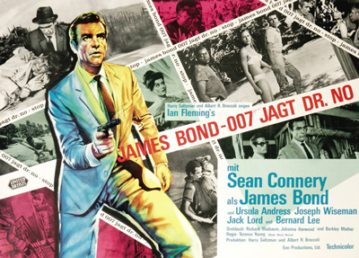
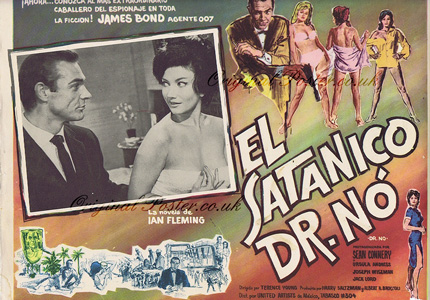
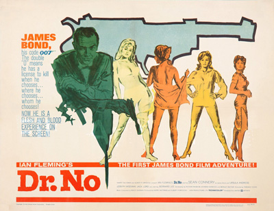

Albert R. Broccoli
Johanna Harwood
Berkely Mather
John Strangways, the British MI6 Station Chief in Jamaica, and his secretary are ambushed and killed. The assassins steal documents related to "Crab Key" and "Doctor No". In response M, the head of MI6, instructs agent James Bond to investigate Strangways' disappearance and to determine whether it is related to his co-operation with the American Central Intelligence Agency (CIA) on a case involving the disruption of rocket launches from Cape Canaveral by radio jamming.
On his arrival at Kingston Airport, Bond is picked up by a chauffeur claiming to have been sent to take him to Government House. Bond determines him to be an enemy agent and, after having him evade a car following them, bests him in a fight. Bond starts to interrogate the chauffeur, who kills himself with a cyanide capsule.
At Strangways' house, Bond sees a photograph of a boatman with Strangways. Bond locates the boatman, named Quarrel, whom he recognises as the driver of the car that followed him. Bond, after overpowering Quarrel and his friend Puss Feller, meets Quarrel's passenger, Felix Leiter, a CIA agent on the same mission as Bond. The CIA has traced the radio jamming signal to Jamaica, but has not determined its exact origin. Quarrel, who is assisting Leiter, reveals that he had been guiding Strangways around the nearby islands to collect mineral samples. He also mentions the reclusive Dr. No, the owner of Crab Key, an island rigorously protected against trespassers by an armed security force.
In Strangways' house, Bond finds a receipt from Professor R.J. Dent concerning rock samples. Bond meets Dent, who says he assayed the samples for Strangways and determined them to be ordinary rocks. Dent subsequently visits Dr. No, who expresses displeasure at Dent's failure to kill Bond and orders him to try again with a tarantula. Bond survives and sets a trap for Dent, whom he captures, interrogates, and then kills.
Using a Geiger counter, Bond detects radioactive traces in Quarrel's boat where Strangways' mineral samples had been. Bond convinces a reluctant Quarrel to take him to Crab Key. There Bond meets the beautiful Honey Ryder, dressed only in a white bikini, who is collecting shells. Ryder leads Bond and Quarrel inland to an open swamp contaminated by radiation. After nightfall, they are attacked by the "dragon" of Crab Key, which is in reality an armoured tractor equipped with a flamethrower. In the resulting battle, Quarrel is incinerated by the flamethrower. Bond and Ryder are taken prisoner, decontaminated in Dr. No's lair, and rendered unconscious with drugged coffee.
Upon waking, they are escorted to dine with Dr. No, a Chinese/German criminal scientist who, due to radiation exposure, has metal hands. He reveals that he is a former member of a Chinese crime Tong, from whom he stole ten million dollars. He also reveals that he is working for a secret organisation called SPECTRE (SPecial Executive for Counter-intelligence, Terrorism, Revenge and Extortion). He plans to disrupt the Project Mercury space launch from Cape Canaveral with his radio beam. He tries to recruit Bond into SPECTRE, but fails. After dinner, Ryder is taken away and Bond is beaten by the guards.
Bond is imprisoned in a holding cell, but escapes by crawling through an air vent. Disguising himself as a worker, he finds his way to Dr. No's control centre, which contains a nuclear pool reactor. As the American rocket lifts off, Bond overloads the reactor and knocks Dr. No into the reactor pool, killing him. Bond finds and frees Ryder, and the two escape the island in a boat as the entire lair explodes. After the boat runs out of fuel, they are rescued by Leiter, who arrives on a Royal Navy ship. As Bond and Ryder kiss, Bond lets go of the ship's tow rope.
While producers Broccoli and Saltzman originally sought Cary Grant for the role, they discarded the idea as Grant would be committed to only one feature film, and the producers decided to go after someone who could be part of a series. Richard Johnson has claimed to have been the first choice of the director, but he turned it down because he already had a contract with MGM and was intending to leave. Another actor purported to have been considered for the role was Patrick McGoohan on the strength of his portrayal of spy John Drake in the television series Danger Man: McGoohan turned down the role. Another potential Bond included David Niven, who later played the character in the 1967 parody Casino Royale.
There are several apocryphal stories as to whom Ian Fleming personally wanted. Reportedly, Fleming favoured actor Richard Todd. In his autobiography When the Snow Melts, Albert Broccoli said Roger Moore had been considered, but had been thought "too young, perhaps a shade too pretty." In his autobiography, My Word Is My Bond, Moore said he was never approached to play the role of Bond until 1973, for Live and Let Die. Moore appeared as Simon Templar on the television series The Saint, airing in the United Kingdom for the first time on 4 October 1962, only one day before the premiere of Dr. No.
Ultimately, the producers turned to 30-year-old Sean Connery for five films. It is often reported that Connery won the role through a contest set up to "find James Bond". While this is untrue, the contest itself did exist, and six finalists were chosen and screen tested by Broccoli, Saltzman and Fleming. The winner of the contest was a 28-year-old model named Peter Anthony, who, according to Broccoli, had a Gregory Peck quality, but proved unable to cope with the role. When Connery was invited to meet Broccoli and Saltzman he appeared scruffy and in unpressed clothes, but Connery "put on an act and it paid off" as he acted in the meeting with a macho, devil-may-care attitude. When he left both Saltzman and Broccoli watched him through the window as he went to his car, both agreeing that he was the right man for Bond. After Connery was chosen, Terence Young took the actor to his tailor and hairdresser, and introduced him to the high life, restaurants, casinos and women of London. In the words of Bond writer Raymond Benson, Young educated the actor "in the ways of being dapper, witty, and above all, cool".
For the first Bond girl, Honey Ryder, Julie Christie was considered, but discarded as the producers felt she was not voluptuous enough. Just two weeks before filming began, Ursula Andress was chosen to play Honey after the producers saw a picture of her taken by Andress' then-husband John Derek. To appear more convincing as a Jamaican, Andress had a tan painted on her and ultimately had her lines redubbed by voice actress Nikki van der Zyl due to Andress' heavy Swiss German accent. For Bond's antagonist Dr. No, Ian Fleming wanted his friend Noël Coward, and Coward answered the invitation with "No! No! No!" Fleming considered that his step-cousin, Christopher Lee, would be good for the role of Dr. No although, by the time Fleming told the producers, they had already chosen Joseph Wiseman for the part. Harry Saltzman picked Wiseman because of his performance in the 1951 film Detective Story, and the actor had special make-up applied to evoke Dr. No's Chinese heritage.
The role as the first Felix Leiter was given to Jack Lord. This is Bond and Leiter's first time meeting each other on film and Leiter does not appear in the novel. Leiter returns for many of Bond's future adventures and in the 2006 reboot of the film series, Casino Royale, Leiter and Bond are seen meeting one another again for the first time. This was Lord's only appearance as Leiter, as he asked for more money and a better billing to return as Leiter in Goldfinger and was subsequently replaced.
The cast also included a number of actors who were to become stalwarts of the future films, including Bernard Lee, who played Bond's superior "M" for another ten films and Lois Maxwell, who played "M"'s secretary Moneypenny in fourteen instalments of the series. Lee was chosen because of being a "prototypical father figure", and Maxwell after Fleming thought she was the perfect fit for his description of the character. Maxwell was initially offered a choice between the roles of Moneypenny or Sylvia Trench and opted for Moneypenny as she thought the Trench role, which included appearing in immodest dress, was too sexual. Eunice Gayson was cast as Sylvia Trench and it was planned that she would be a recurring girlfriend for Bond throughout six films, although she appeared only in Dr. No and From Russia with Love. She had been given the part by director Terence Young, who had worked with her in Zarak and invited Gayson saying "You always bring me luck in my films", although she was also cast due to her voluptuous figure. One role which was not given to a future regular was that of Major Boothroyd, the head of Q-Branch, which was given to Peter Burton. Burton was unavailable for the subsequent film, From Russia with Love, and the role was taken by Desmond Llewelyn.
Anthony Dawson, who played Professor Dent, met director Terence Young when he was working as a stage actor in London, but by the time of the film's shooting Dawson was working as a pilot and crop duster in Jamaica. Dawson also portrayed Ernst Stavro Blofeld, head of SPECTRE, in From Russia with Love and Thunderball, although his face was never seen and his voice was redubbed by Austrian actor Eric Pohlmann. Zena Marshall, who played Miss Taro, was mostly attracted by the humorous elements of the script, and described her role as "this attractive little siren, and at the same time I was the spy, a bad woman", who Young asked to play "not as Chinese, but a Mid-Atlantic woman who men dream about but is not real". The role of Taro was previously rejected by Marguerite LeWars, the Miss Jamaica 1961 who worked at the Kingston airport, as it required being "wrapped in a towel, lying in a bed, kissing a strange man". LeWars appeared as a photographer hired by Dr. No instead.
When Harry Saltzman gained the rights for the novel, he initially did not go through with the project. Instead, Albert R. "Cubby" Broccoli wanted the rights to the novels and attempted to buy them from Saltzman. Saltzman did not want to sell the rights to Broccoli and instead they formed a partnership to make the films. A number of Hollywood film studios did not want to fund the films, finding them "too British" or "too blatantly sexual". Eventually the two received authorisation from United Artists to produce Dr. No, to be released in 1962. Saltzman and Broccoli created two companies: Danjaq, which was to hold the rights to the films, and Eon Productions, which was to produce them. The partnership between Broccoli and Saltzman lasted until 1975, when tensions during the filming of The Man with the Golden Gun led to an acrimonious split and Saltzman sold his shares of Danjaq to United Artists.
Initially Broccoli and Saltzman had wanted to produce the eighth Bond novel, 1961's Thunderball, as the first film, but there was an ongoing legal dispute between the screenplay's co-author, Kevin McClory and Ian Fleming. As a result, Broccoli and Saltzman chose Dr. No: the timing was apposite, with claims that American rocket testing at Cape Canaveral had problems with rockets going astray.
The producers offered Dr. No to Guy Green, Guy Hamilton, Val Guest and Ken Hughes to direct, but all of them turned it down. They finally signed Terence Young who had a long background with Broccoli's Warwick Films as the director. Broccoli and Saltzman felt that Young would be able to make a real impression of James Bond and transfer the essence of the character from book to film. Young imposed many stylistic choices for the character which continued throughout the film series. Young also decided to inject much humour, as he considered that "a lot of things in this film, the sex and violence and so on, if played straight, (a) would be objectionable and (b) we're never gonna go past the censors; but the moment you take the mickey out, put the tongue out in the cheek, it seems to disarm."
The producers asked United Artists for financing, but the studio would only put up $1 million. Later, the UK arm of United Artists provided an extra $100,000 to create the climax where Dr. No's base explodes. As a result of the low budget, only one sound editor was hired (normally there are two, for sound effects and dialogue), and many pieces of scenery were made in cheaper ways, with M's office featuring cardboard paintings and a door covered in a leather-like plastic, the room where Dent meets Dr. No costing only £745 to build, and the aquarium in Dr. No's base being magnified stock footage of goldfish. Furthermore, when art director Syd Cain found out his name was not in the credits, Broccoli gave him a golden pen to compensate, saying that he did not want to spend money making the credits again. Production designer Ken Adam later told UK daily newspaper The Guardian in 2005:
"The budget for Dr. No was under $1m for the whole picture. My budget was £14,500. I filled three stages at Pinewood full of sets while they were filming in Jamaica. It wasn't a real aquarium in Dr No's apartment. It was a disaster to tell you the truth because we had so little money. We decided to use a rear projection screen and get some stock footage of fish. What we didn't realise was because we didn't have much money the only stock footage they could buy was of goldfish-sized fish, so we had to blow up the size and put a line in the dialogue with Bond talking about the magnification. I didn't see any reason why Dr No shouldn't have good taste so we mixed contemporary furniture and antiques. We thought it would be fun for him to have some stolen art so we used Goya's Portrait of the Duke of Wellington, which was still missing at the time. I got hold of a slide from the National Gallery - this was on the Friday, shooting began on the Monday - and I painted a Goya over the weekend. It was pretty good so they used it for publicity purposes but, just like the real one, it got stolen while it was on display."
During the series' fifty-year history only a few of the films have remained substantially true to their source material; Dr. No has many similarities to the novel and follows its basic plot, but there are a few notable omissions. Major elements from the novel that are missing from the film include Bond's fight with a giant squid, and the escape from Dr. No's complex using the dragon-disguised swamp buggy. Elements of the novel that were significantly changed for the film include the use of a (non-venomous) tarantula spider instead of a centipede; Dr. No's secret complex being disguised as a bauxite mine instead of a guano quarry; Dr. No's plot to disrupt NASA space launches from Cape Canaveral using a radio beam instead of disrupting US missile testing on Turks Island; the method of Dr. No's death by boiling in overheating reactor coolant rather than a burial under a chute of guano, and the introduction of SPECTRE, an organisation absent from the book. Components absent from the novel but added to the film include the introduction of the Bond character in a gambling casino, the introduction of Bond's semi-regular girlfriend Sylvia Trench, a fight scene with an enemy chauffeur, a fight scene to introduce Quarrel, the seduction of Miss Taro, Bond's recurring CIA ally Felix Leiter, Dr. No's partner in crime Professor Dent and Bond's controversial cold-blooded killing of this character.
Dr. No is set in London, England, Kingston, Jamaica and Crab Key, a fictional island off Jamaica. Filming began on location in Jamaica on 16 January 1962. The primary scenes there were the exterior shots of Crab Key and Kingston, where an uncredited Syd Cain acted as art director and also designed the Dragon Tank. Shooting took place a few yards from Fleming's Goldeneye estate, and the author regularly visited the filming with friends. Location filming was largely in Oracabessa, with additional scenes on the Palisadoes strip and Port Royal in St Andrew. On 21 February, production left Jamaica with footage still unfilmed due to a change of weather. Five days later, filming began at Pinewood Studios, Buckinghamshire, England with sets designed by Ken Adam, which included Dr. No's base, the ventilation duct and the interior of the British Secret Service headquarters. The studio was used on the majority of later Bond films. Adam's initial budget for the entire film was just £14,500 (£283,884 in 2018), but the producers were convinced to give him an extra £6,000 out of their own finances. After 58 days of filming, principal photography completed on 30 March 1962.
The scene where a tarantula walks over Bond was initially shot by pinning a bed to the wall and placing Sean Connery over it, with a protective glass between him and the spider. Director Young did not like the final results, so the scenes were interlaced with new footage featuring the tarantula over stuntman Bob Simmons. Simmons, who was uncredited for the film, described the scene as the most frightening stunt he had ever performed. The book features a scene where Honey Ryder is tortured by being tied to the ground along with crabs, but since the crabs were sent frozen from the Caribbean, they did not move much during filming, so the scene was altered to have Honey slowly drowning. Simmons also served as the film's fight choreographer, employing a rough fighting style. The noted violence of Dr. No, which also included Bond shooting Dent in cold blood, caused producers to make adaptations to get an "A" rating – allowing minors to enter accompanied by an adult – from the British Board of Film Classification.
Editor Peter R. Hunt used an innovative editing technique, with extensive use of quick cuts, and employing fast motion and exaggerated sound effects on the action scenes. Hunt said his intention was to "move fast and push it along the whole time, while giving it a certain style", and added that the fast pacing would help audiences not notice any writing problems. As title artist Maurice Binder was creating the credits, he had an idea for the introduction that appeared in all subsequent Bond films, the James Bond gun barrel sequence. It was filmed in sepia by putting a pinhole camera inside an actual .38 calibre gun barrel, with Bob Simmons playing Bond. Binder also designed a highly stylised main title sequence, a theme that has been repeated in the subsequent Eon-produced Bond films. Binder's budget for the title sequence was £2,000 (£39,156 in 2018).



